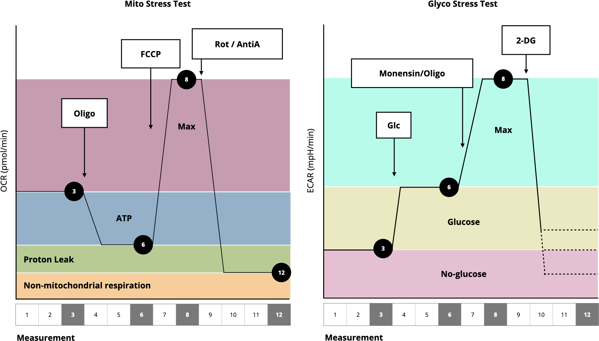

Proton production rate (PPR):
Calculates the proton production from glucose during its conversion to bicarbonate and assuming max $\frac{\ce{H}^+}{\ce{O2}}$ of 1
$$ \ce{2H2 + O2 -> 2H2O} $$
Calculates the proton production from glucose during its conversion to $\ce{lactate + H+}$.
Joules of ATP (JATP) production:
$$ \text{ATP}_{\text{glyc}} = \Bigl(\text{PPR}_\text{glyc} \cdot \frac{\text{ATP}}{\text{lactate}}\Bigl) + \Bigl(\text{MITO}_\text{resp} \cdot 2 \cdot \frac{\text{P}}{\text{O}_\text{glyc}}\Bigl) $$
with = 0.167 for glucose (0.242 for glycogen).
$$ \text{ATP}_\text{resp} = \Bigl(\text{coupled MITO}_\text{resp} \cdot 2 \cdot \frac{\text{P}}{\text{O}_\text{oxphos}}\Bigl) + \Bigl(\text{MITO}_\text{resp} \cdot 2 \cdot \frac{\text{P}}{\text{O}_\text{TCA}}\Bigl) $$
with = 2.486 and = 0.167.